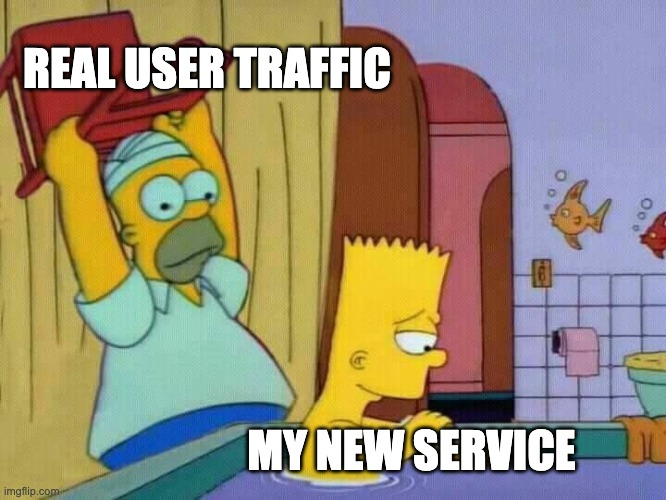
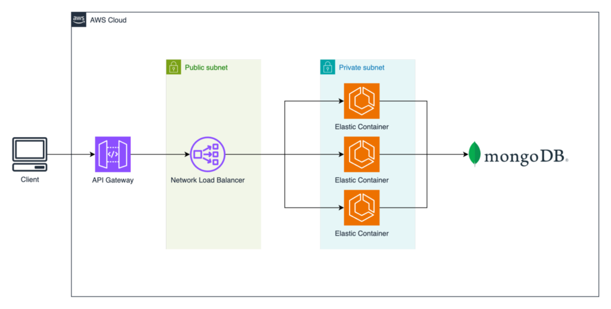
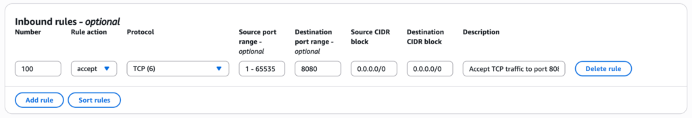
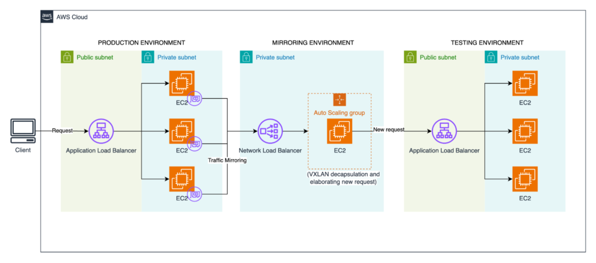

We've all been there: Unit tests are green, integration tests pass with flying colors, and even the most rigorous synthetic load tests show the new code is ready. Confidence is high. Yet, a persistent question often lingers in the background:
"What will happen with real users? With their messy, unpredictable, I-didn't-even-know-the-API-could-do-that kind of traffic?"

That question was particularly resonant for us. We had just completed a significant refactoring of a critical application, the kind whose slightest hiccup sends ripples across the business.
The Scenario: Our Production Architecture
Our setup is a common AWS pattern: an AWS Application Load Balancer distributes traffic across a fleet of Amazon EC2 instances running our service. The service's main job is to query a MongoDB database and return results.

The "What If": Replicating Production Without Risk
The concern sparked a caffeine-fueled brainstorming session. "What if," someone proposed, "we could transparently shadow live production traffic and send it to our new code, completely isolated from the actual production environment?"
While ambitious, AWS offers a capability adaptable to this challenge: Amazon VPC Traffic Mirroring.
Here's the concept: Amazon VPC Traffic Mirroring acts like a one-way mirror for the network. Production traffic flows normally on one side, handling real user requests without interruption. On the other side, an exact copy of that traffic is sent to a designated target, like an AWS Network Load Balancer or a network interface. The critical detail is how it sends this copy. The mirrored packets are encapsulated in VXLAN, a network virtualization protocol that wraps layer-2 Ethernet frames into UDP packets for transport across IP networks. This prevents them from being treated as regular network traffic and interfering with anything. However, it also means our test application can't process these VXLAN packets as standard HTTP requests.
To bridge this gap, we needed an utility to:
- Receive the VXLAN-encapsulated packets.
- Unwrap them to extract the original production requests.
- Forward the raw requests to our test environment.
With this approach, the production flow remains untouched and unaware, while our test environment receives a real-time, risk-free replica of live traffic. It wasn't a turnkey solution, but with the right tooling for decapsulation, it was a powerful and safe way to validate our new code against reality.
Building Our Doppelgänger Environment
With a clear strategy, we got to work.
First, we built an isolated replica. We provisioned a complete, parallel stack: new Amazon EC2 instances running the refactored code, a dedicated "shadow" AWS Application Load Balancer, and a fresh MongoDB instance seeded with a recent production snapshot. This was our high-fidelity testing ground.
Second, we deployed our mirroring environment. We set up an AWS Network Load Balancer in front of an AWS Auto Scaling group of Amazon EC2 instances. On these instances, we installed a lightweight open-source tool (like this one) to handle the VXLAN decapsulation and forward the traffic to our shadow AWS ALB. This gateway was the bridge between the mirrored world and our test environment.
Third, we identified the traffic source. We identified the network interfaces (ENIs) of our production Amazon EC2 instances as the Mirror Source. This is where the traffic we wanted to copy originated.
We didn't need to mirror all traffic; operational chatter would only add noise and cost. Our service operates on port 8080, so we created a simple Mirror Filter: "Only mirror TCP traffic destined for port 8080." This focused our experiment and, crucially, helped manage costs.

Finally, we created a Mirror Session to connect the source, the filter, and our gateway target. With the configuration complete, we activated the session.

The Moment of Validation
The results were immediate and illuminating. Watching our CloudWatch dashboards, we saw the CPU and Memory metrics for the new test service begin to fluctuate, perfectly mimicking the rhythm of the production environment. Our shadow application was alive, processing a real-time replica of production load.
This is where the true value emerged.
We let the mirror run for a full day, capturing a complete cycle of peak and off-peak traffic. Analyzing the application logs and database metrics revealed two critical insights:
- A Subtle Query Bug: Our refactored code had inadvertently introduced an N+1 query pattern. It was performant enough to fly under the radar in synthetic tests, but under the diverse load of real users, it was generating thousands of small, unnecessary database calls. This would have been nearly impossible to spot in a traditional staging environment.
- Performance Confirmation: After we fixed the bug and redeployed the shadow service, the new metrics provided undeniable proof: our refactor was, in fact, significantly more efficient. CPU utilization was lower, and the database load dropped noticeably.
This was the crucial shift: we moved from confident assumptions to concrete proof, validated against real-world chaos, all without ever putting a single user's experience at risk. The subsequent production deployment was the calmest, most confident one we'd ever done.
Key Takeaways from Traffic Mirroring
This technique has become a cornerstone of our strategy for high-stakes deployments. It doesn't replace standard testing, but serves as the ultimate pre-flight check.
Cost management is crucial
Mirroring is priced per gigabyte of traffic processed. Be frugal. Use aggressive filters and run experiments for specific, limited durations to keep costs in check.
Security is non-negotiable
The mirrored traffic is an exact copy of production data. In our case, TLS was terminated at the production load balancer, meaning the mirrored traffic was unencrypted. While useful for analysis, this demands that your shadow environment be in a secure, private, and rigorously controlled VPC. Treat mirrored data with the same diligence as production data.
A finisher, not a replacement
This is a late-stage validation tool, not a substitute for proper unit tests, integration tests, and a solid staging environment. Think of it as the final exam, not the homework.
Amazon VPC Traffic Mirroring fundamentally changed how we manage deployment risk. It bridged the daunting gap between our expectations and production reality. We stopped merely hoping our code would perform under pressure, we gained the ability to know it would.
Next time you're facing a critical launch, ask yourself: what if you could see how the system behaves with live traffic, before it goes live?